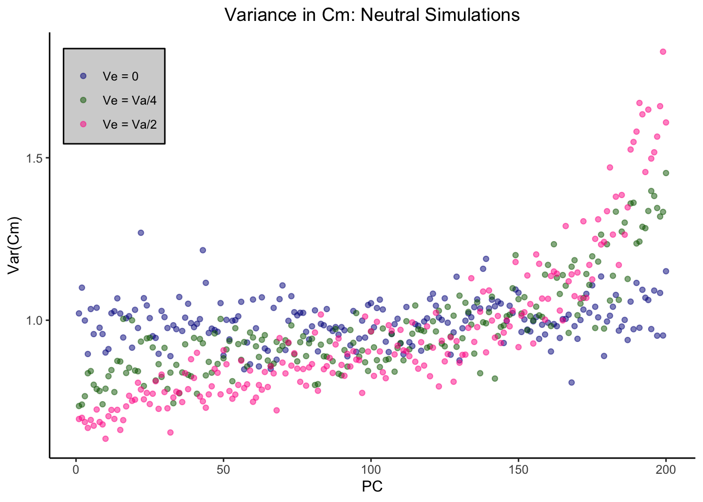
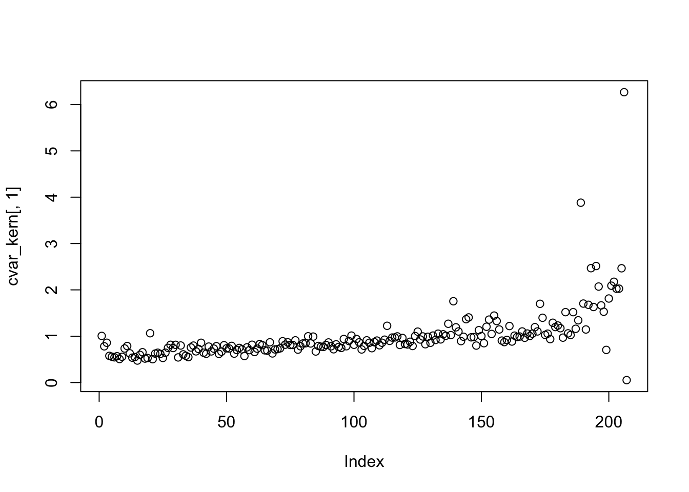
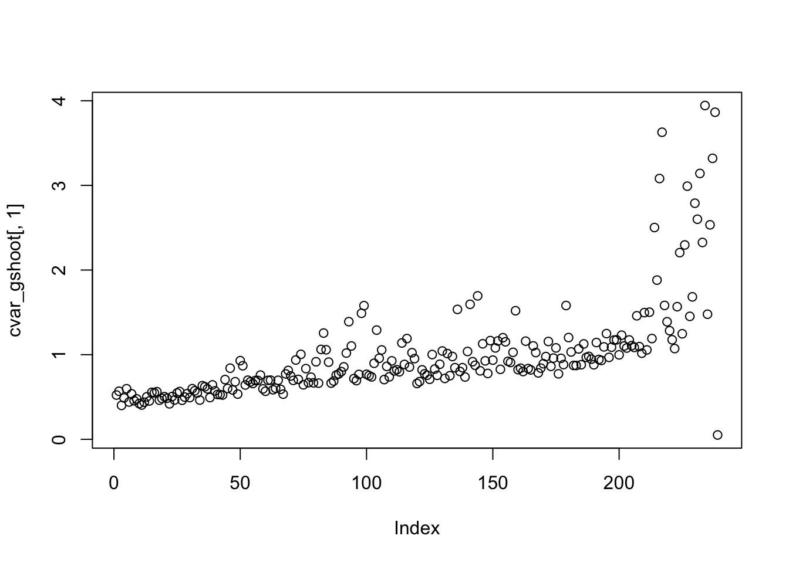
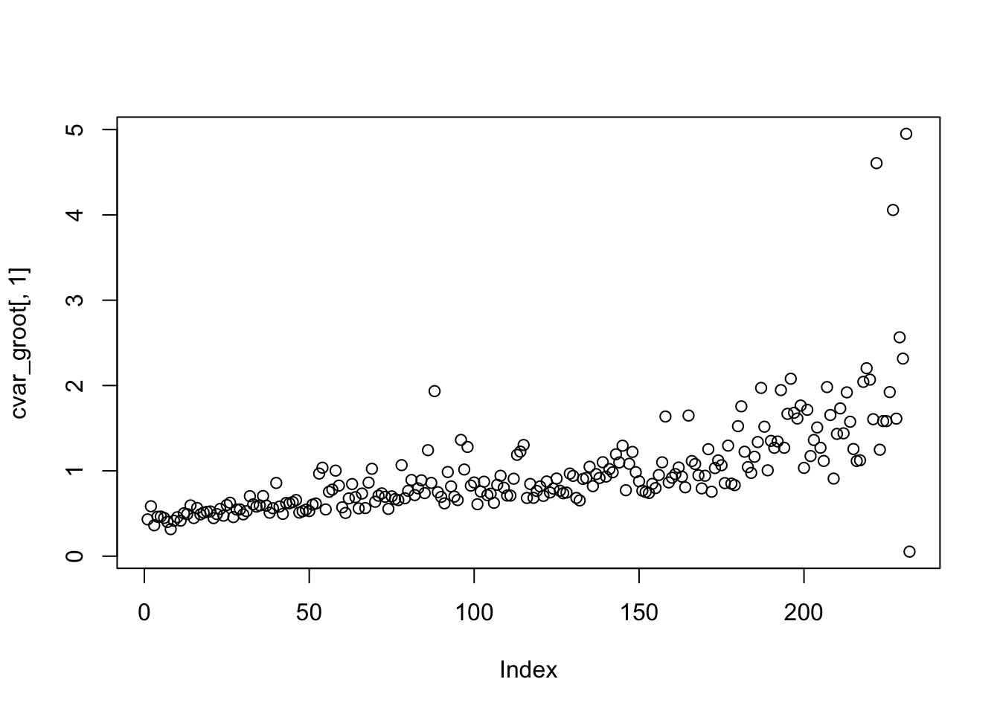
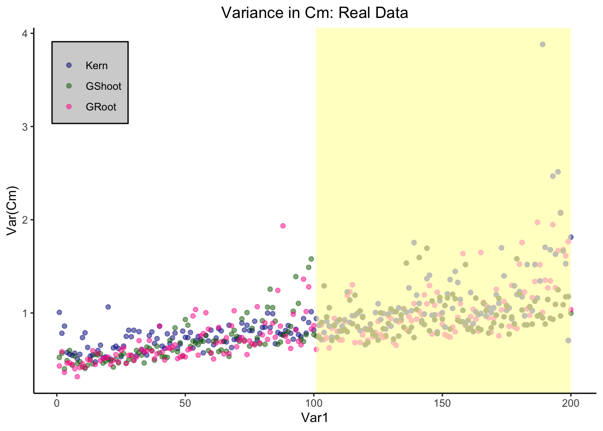
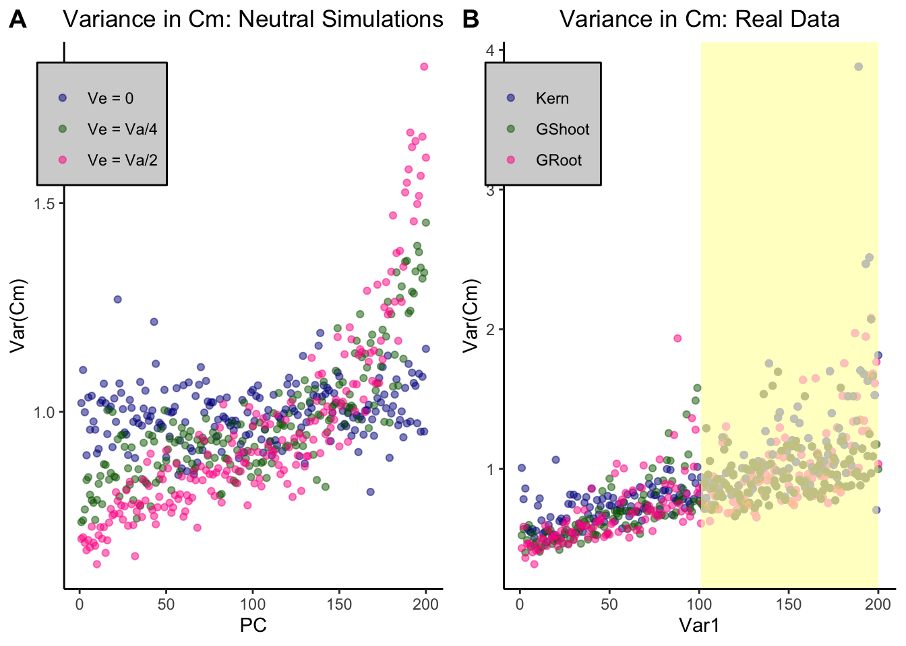

Last updated: 2020-04-24
Checks: 7 0
Knit directory: Blancetal/analysis/
This reproducible R Markdown analysis was created with workflowr (version 1.6.0). The Checks tab describes the reproducibility checks that were applied when the results were created. The Past versions tab lists the development history.
Great! Since the R Markdown file has been committed to the Git repository, you know the exact version of the code that produced these results.
Great job! The global environment was empty. Objects defined in the global environment can affect the analysis in your R Markdown file in unknown ways. For reproduciblity it’s best to always run the code in an empty environment.
The command set.seed(20200217) was run prior to running the code in the R Markdown file. Setting a seed ensures that any results that rely on randomness, e.g. subsampling or permutations, are reproducible.
Great job! Recording the operating system, R version, and package versions is critical for reproducibility.
Nice! There were no cached chunks for this analysis, so you can be confident that you successfully produced the results during this run.
Great job! Using relative paths to the files within your workflowr project makes it easier to run your code on other machines.
Great! You are using Git for version control. Tracking code development and connecting the code version to the results is critical for reproducibility. The version displayed above was the version of the Git repository at the time these results were generated.
Note that you need to be careful to ensure that all relevant files for the analysis have been committed to Git prior to generating the results (you can use wflow_publish or wflow_git_commit). workflowr only checks the R Markdown file, but you know if there are other scripts or data files that it depends on. Below is the status of the Git repository when the results were generated:
Ignored files:
Ignored: .DS_Store
Ignored: .RData
Ignored: .Rhistory
Ignored: .Rproj.user/
Ignored: data/.DS_Store
Ignored: data/df_STAR_HTSeq_counts_B73_match_based_on_genet_dist_DESeq2_normed_rounded.txt
Ignored: output/.DS_Store
Ignored: output/Identifying_Selected_Genes/.DS_Store
Ignored: output/Selection_on_Expression_of_Cold_Response_Genes/.DS_Store
Ignored: output/Selection_on_expression_of_coexpression_clusters/.DS_Store
Untracked files:
Untracked: analysis/scratch.Rmd
Untracked: data/quaint-results.rda
Untracked: figures/Supplement_Ve.png
Untracked: output/GO_analysis.txt
Untracked: output/PC5_day.txt
Untracked: output/all_day.txt
Untracked: output/all_sigenes_annotate.csv
Untracked: output/all_sigenes_annotate.txt
Unstaged changes:
Modified: analysis/Drought-genes.Rmd
Modified: analysis/Expression_plots.Rmd
Modified: analysis/Identifying_quaint.Rmd
Modified: analysis/Selection_on_Expression_of_Env_Rsponse_Genes.Rmd
Note that any generated files, e.g. HTML, png, CSS, etc., are not included in this status report because it is ok for generated content to have uncommitted changes.
These are the previous versions of the R Markdown and HTML files. If you’ve configured a remote Git repository (see ?wflow_git_remote), click on the hyperlinks in the table below to view them.
| File | Version | Author | Date | Message |
|---|---|---|---|---|
| Rmd | b426ca9 | jgblanc | 2020-04-24 | added supplemental stuff |
get_cm <- function(Ve) {
## Kinship Matrix for all LMAD lines
myF <- read.table('../data/Kinship_matrices/F_Kern.txt')
## Set Parameters for Simulated data
means <- rep(0,nrow(myF))
Va <- 1
Ve <- Ve
I <- diag(nrow(myF))
sig <- as.matrix((myF * 2 * Va) + (Ve * I))
## Simulate n number of random draws
dat1 <- mvrnorm(n = 500, mu = means, Sigma = sig)
## Transpose simulated data to get in the correct form
df1 <- t(dat1)
## Mean center the data
for (i in 1:ncol(df1)){
df1[,i] <- scale(df1[,i], scale = FALSE)
}
## Get Eigen Values and Vectors
myE <- eigen(myF)
E_vectors <- myE$vectors
E_values <- myE$values
## Make new matrix to collect Z values
df2 <- data.frame(matrix(ncol=ncol(df1), nrow=nrow(df1)))
colnames(df2) <- colnames(df1[1:ncol(df1)])
rownames(df2) <- rownames(df1)
## Calculate Q values by multiplying the mean-centered expression value by each eigen vector
for (i in 1:ncol(df2)) {
#print(i)
mean_centered_data <- t(as.matrix(as.numeric(df1[,i])))
for (k in 1:nrow(df2)){
u <- as.matrix(as.numeric(E_vectors[,k]))
value <- mean_centered_data %*% u
df2[k,i] <- value
}
}
## Get the square root of the Eigen values
de <- data.frame(matrix(nrow = nrow(myF),ncol = 2))
de$Egien_values <- E_values
de$Sqrt_EV <- sqrt((de$Egien_values))
## Calculate C-values by dividing Q values by the square root of the eigen values
df4 <- data.frame(matrix(ncol=ncol(df2),nrow=nrow(df2)))
for (i in 1:ncol(df2)){
df4[,i] <- (df2[,i] / de$Sqrt_EV)
}
for (i in 1:ncol(df4)) {
df4[,i] <- scale(df4[,i])
}
cvar_sim <- data.frame(matrix(ncol=1, nrow = nrow(myF)))
for (i in 1:nrow(myF)) {
val <- t(df4[i,])
val <- var(val[,1])
cvar_sim[i,1] <- val
}
return(cvar_sim)
}zero <- get_cm(Ve = 0)
one <- get_cm(Ve = 0.25)
two <- get_cm(Ve = 0.5)
dat <- cbind(zero, one, two)
colnames(dat) <- c("zero", "one", "two")
dat$PC <- seq(from = 1, to= 207, by =1)
dat2 <- dat[1:200,]
dat3 <- melt(dat2, id.vars = "PC")
col <- c("darkblue", "darkgreen", "deeppink")
pl1 <- ggplot(dat3, aes(x = PC, y = value, color = variable)) + geom_point(alpha = 0.5) + scale_color_manual(values = col, labels = c("Ve = 0", "Ve = Va/4", "Ve = Va/2")) + theme_classic() + theme(legend.position=c(0.1,0.85)) + theme(legend.title=element_blank()) + ylab("Var(Cm)") + ggtitle("Variance in Cm: Neutral Simulations") + theme(plot.title = element_text(hjust = 0.5)) + theme(legend.background = element_rect(size=0.5, linetype="solid", fill = "lightgray",
colour ="black"))
pl1
get_cm_real <- function(myTissue){
print(myTissue)
# Read in mean-centered expression values
df1 <- read.table(paste("../data/Mean_centered_expression/",myTissue,".txt",sep=""))
geneNames = names(df1)
# Read in tissue specific kinship matrix
myF <- read.table(paste('../data/Kinship_matrices/F_',myTissue,'.txt',sep=""))
## Get Eigen Values and Vectors
myE <- eigen(myF)
E_vectors <- myE$vectors
E_values <- myE$values
## Testing for selection on first 5 PCs
myM = 1:nrow(myF)
## Using the last 1/2 of PCs to estimate Va
myL = 6:dim(myF)[1]
# # test for selection on each gene
allGeneOutput <- matrix(nrow=nrow(myF), ncol=ncol(df1))
for (i in 1:ncol(df1)) {
myQpc = calcQpc(myZ = df1[,i], myU = E_vectors, myLambdas = E_values, myL = myL, myM = myM)
allGeneOutput[,i] <- myQpc$cm[1,]
}
return(allGeneOutput)
}C_kern <- get_cm_real("Kern")[1] "Kern"for (i in 1:ncol(C_kern)) {
C_kern[,i] <- scale(C_kern[,i])
}
cvar_kern <- data.frame(matrix(ncol=1, nrow = 207))
for (i in 1:207) {
val <- C_kern[i,]
val <- var(val)
cvar_kern[i,1] <- val
}
plot(cvar_kern[,1])
C_gshoot <- get_cm_real("Gshoot")[1] "Gshoot"for (i in 1:ncol(C_gshoot)) {
C_gshoot[,i] <- scale(C_gshoot[,i])
}
cvar_gshoot <- data.frame(matrix(ncol=1, nrow = 239))
for (i in 1:239) {
val <- C_gshoot[i,]
val <- var(val, na.rm = T)
cvar_gshoot[i,1] <- val
}
plot(cvar_gshoot[,1])
C_groot <- get_cm_real("GRoot")[1] "GRoot"for (i in 1:ncol(C_groot)) {
C_groot[,i] <- scale(C_groot[,i])
}
cvar_groot <- data.frame(matrix(ncol=1, nrow = 232))
for (i in 1:232) {
val <- C_groot[i,]
val <- var(val, na.rm = T)
cvar_groot[i,1] <- val
}
plot(cvar_groot[,1])
cvar_kern2 <- cvar_kern[1:200,]
cvar_gshoot2 <- cvar_gshoot[1:200,]
cvar_groot2 <- cvar_groot[1:200,]
PC <- seq(1,200)
data_plot <- cbind(PC, cvar_kern2, cvar_gshoot2, cvar_groot2)
colnames(data_plot) <- c("PC", "Kern", "GShoot", "GRoot")
data_plot2 <- melt(data_plot, id.vars = "PC")
data_plot2 <- data_plot2[-c(1:200), ]
col <- c("darkblue", "darkgreen", "deeppink")
pl2 <- ggplot(dat = data_plot2, aes(x = Var1, y = value, color = Var2)) + geom_point(alpha = 0.5) + ylab("Var(Cm)") + ggtitle("Kernel Data") + scale_color_manual(values = col) + theme_classic() + theme(plot.title = element_text(hjust = 0.5)) + theme(legend.position=c(0.1,0.85)) + theme(legend.title=element_blank()) + ylab("Var(Cm)") + ggtitle("Variance in Cm: Real Data") + theme(legend.background = element_rect(size=0.5, linetype="solid", fill = "lightgray",colour ="black")) + geom_rect(mapping=aes(xmin=101, xmax=200, ymin=-Inf, ymax=Inf),fill = "lightyellow", inherit.aes= F, alpha = 0.0138)
pl2
library(ggpubr)Loading required package: magrittrpl <- ggarrange(pl1, pl2, labels = c("A", "B"))
pl
ggsave("../figures/Supplement_Ve.png", pl, width = 13, height = 6)
sessionInfo()R version 3.6.2 (2019-12-12)
Platform: x86_64-apple-darwin15.6.0 (64-bit)
Running under: macOS High Sierra 10.13.6
Matrix products: default
BLAS: /Library/Frameworks/R.framework/Versions/3.6/Resources/lib/libRblas.0.dylib
LAPACK: /Library/Frameworks/R.framework/Versions/3.6/Resources/lib/libRlapack.dylib
locale:
[1] en_US.UTF-8/en_US.UTF-8/en_US.UTF-8/C/en_US.UTF-8/en_US.UTF-8
attached base packages:
[1] stats graphics grDevices utils datasets methods base
other attached packages:
[1] ggpubr_0.2.5 magrittr_1.5 quaint_0.0.0.9000 dplyr_0.8.4
[5] ggplot2_3.2.1 reshape2_1.4.3 MASS_7.3-51.4 workflowr_1.6.0
loaded via a namespace (and not attached):
[1] Rcpp_1.0.3 compiler_3.6.2 pillar_1.4.3 later_1.0.0
[5] git2r_0.26.1 plyr_1.8.5 tools_3.6.2 digest_0.6.25
[9] evaluate_0.14 lifecycle_0.1.0 tibble_2.1.3 gtable_0.3.0
[13] pkgconfig_2.0.3 rlang_0.4.4 yaml_2.2.1 xfun_0.12
[17] withr_2.1.2 stringr_1.4.0 knitr_1.28 fs_1.3.1
[21] cowplot_1.0.0 rprojroot_1.3-2 grid_3.6.2 tidyselect_1.0.0
[25] glue_1.3.1 R6_2.4.1 rmarkdown_2.1 farver_2.0.3
[29] purrr_0.3.3 whisker_0.4 backports_1.1.5 scales_1.1.0
[33] promises_1.1.0 htmltools_0.4.0 assertthat_0.2.1 colorspace_1.4-1
[37] ggsignif_0.6.0 httpuv_1.5.2 labeling_0.3 stringi_1.4.6
[41] lazyeval_0.2.2 munsell_0.5.0 crayon_1.3.4